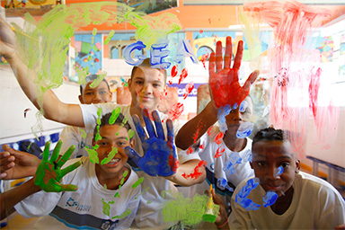

Fale com a gente
nosso endereço
Rua São Clemente 360, Rio de Janeiro - RJ
nosso telefone
+55 (21) 2976-9708
O projeto proporciona a um grupo de estudantes da rede municipal de ensino a experiência de um dia na prefeitura. Através de exercícios lúdicos e didáticos sobre o orçamento e o funcionamento dos órgãos municipais, o projeto visa fortalecer o Artigo 12 da Convenção dos Direitos da Criança, que garante o direito à participação em processos decisórios que sejam relevantes para a vida desses alunos.
Além disso, o XXX também tem a função de contribuir com a formação sobre escuta e participação infantil necessária para integrantes da gestão municipal, a fim de que possam conhecer e garantir o direito dessas crianças de participar da construção do Rio de Janeiro.

O exercício acontece em dois momentos: no primeiro, os jovens realizam atividades pedagógicas e lúdicas de formulação de projetos para a cidade e de simulação do orçamento da prefeitura e de algumas secretarias municipais. Divididos em grupos, os alunos e alunas têm a oportunidade de brincar com o orçamento municipal, distribuindo valores fechados em investimentos reais, como capacitação de professores no caso da Secretaria Municipal de Educação e reforma de equipamentos públicos como no caso da Secretaria Municipal de Cultura. O exercício inteiro é construído a partir do orçamento municipal, disponibilizado no Portal de Transparência da Prefeitura.
No segundo momento, os estudantes têm a liberdade para apresentar suas visões e propostas de políticas para secretários e secretárias municipais, depois de criar e colocar no papel aquilo que identificam como prioritário para a gestão do Rio. Após essa apresentação, é a vez dos representantes das secretarias comentarem as atividades feitas pelos jovens, explicando a maneira como esses processos de gestão se dão na prática.
Antes do encontro, a equipe do LAB.Rio oferece uma oficina sobre a importância da participação infantil na gestão pública e as principais metodologias de escuta às gestoras e gestores da prefeitura que receberão os grupos de crianças e adolescentes.
A intenção é facilitar esse encontro, a fim de que ele seja uma experiência marcante e transformadora de atenção, adaptação, escuta qualificada e participação cidadã para toda a equipe técnica envolvida.
O objetivo final é que as crianças retornem ao seu cotidiano mais capazes e interessadas em participar, multiplicando esse interesse através de sua rede de amigas e amigos, da família, do colégio e do bairro.
O mesmo será proposto aos integrantes da prefeitura: que multipliquem por todos os órgãos municipais os efeitos que a vivência certamente terá em cada uma delas.
Rua São Clemente 360, Rio de Janeiro - RJ
+55 (21) 2976-9708